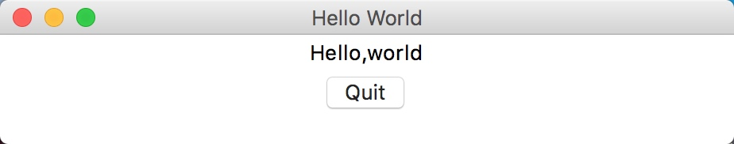
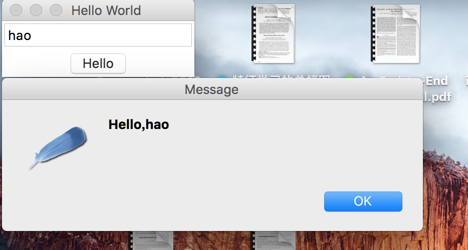
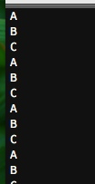
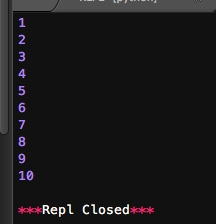
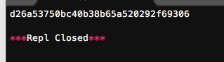
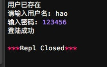

图形界面
Python支持多种图形界面的第三方库，包括：
* Tk
* wxWidgets
* Qt
* GTK
等等.
但是Python自带的库是支持Tk的Tkinter，使用Tkinter，无需安装任何包，就可以直接使用。本章简单介绍如何使用Tkinter进行GUI编程。
Tkinter
我们来梳理一下概念：
我们编写的Python代码会调用内置的Tkinter，Tkinter封装了访问Tk的接口；
Tk是一个图形库，支持多个操作系统，使用Tcl语言开发；
Tk会调用操作系统提供的本地GUI接口，完成最终的GUI。
所以，我们的代码只需要调用Tkinter提供的接口就可以了。
第一个GUI程序
使用Tkinter十分简单，我们来编写一个GUI版本的“Hello, world!”。
第一步是导入Tkinter包的所有内容：
from Tkinter import *
第二步是从Frame派生一个Application类，这是所有Widget的父容器：
class Applicition(Frame):
def __init__(self, master=None):
Frame.__init__(self,master)
self.pack()
self.creatWidgets()
def creatWidgets(self):
self.helloLabel = Label(self,text = 'Hello,world')
self.helloLabel.pack()
self.quitButton = Button(self, text = 'Quit',command = self.quit)
self.quitButton.pack()
在GUI中，每个Button、Label、输入框等，都是一个Widget。Frame则是可以容纳其他Widget的Widget，所有的Widget组合起来就是一棵树。
pack()方法把Widget加入到父容器中，并实现布局。pack()是最简单的布局，grid()可以实现更复杂的布局。
在createWidgets()方法中，我们创建一个Label和一个Button，当Button被点击时，触发self.quit()使程序退出。
第三步，实例化Application，并启动消息循环：
app = Application()
# 设置窗口标题:
app.master.title('Hello World')
# 主消息循环:
app.mainloop()
GUI程序的主线程负责监听来自操作系统的消息，并依次处理每一条消息。因此，如果消息处理非常耗时，就需要在新线程中处理。
运行这个GUI程序，可以看到下面的窗口：

点击“Quit”按钮或者窗口的“x”结束程序。
输入文本
我们再对这个GUI程序改进一下，加入一个文本框，让用户可以输入文本，然后点按钮后，弹出消息对话框。
from Tkinter import *
import tkMessageBox
class Applicition(Frame):
def __init__(self, master=None):
Frame.__init__(self, master)
self.pack()
self.creatWidgets()
def creatWidgets(self):
self.nameInput = Entry(self)
self.nameInput.pack()
self.alertButton = Button(self, text='Hello', command=self.hello)
self.alertButton.pack()
def hello(self):
name = self.nameInput.get() or 'world'
tkMessageBox.showinfo('Message', 'Hello,%s' % name)
app = Applicition()
app.master.title('Hello World')
app.mainloop()

当用户点击按钮时，触发hello()，通过self.nameInput.get()获得用户输入的文本后，使用tkMessageBox.showinfo()可以弹出消息对话框。
小结
Python内置的Tkinter可以满足基本的GUI程序的要求，如果是非常复杂的GUI程序，建议用操作系统原生支持的语言和库来编写。
源码参考：https://github.com/michaelliao/learn-python/tree/master/gui
HTMLParser
在Pythonz中我们有可能需要去解析一个爬下来的HTML,我们在Python中应该如何去解析呢?
好在Python提供了HTMLParser来非常方便地解析HTML，只需简单几行代码：
# -*- coding: utf-8 -*-
from HTMLParser import HTMLParser
from htmlentitydefs import name2codepoint
class MyHTMLParser(HTMLParser):
def handle_starttag(self,tag,attrs):
print ('<%s>' % tag)
def handle_endtag(self,tag):
print ('</%s>' % tag)
def handle_startendtag(self, tag, attrs):
print('<%s/>' % tag)
def handle_data(self, data):
print('data')
def handle_comment(self, data):
print('<!-- -->')
def handle_entityref(self, name):
print('&%s;' % name)
def handle_charref(self, name):
print('&#%s;' % name)
parser = MyHTMLParser()
parser.feed('<html><head></head><body><p>Some <a href=\"#\">html</a> tutorial...<br>END</p></body></html>')
feed()方法可以多次调用，也就是不一定一次把整个HTML字符串都塞进去，可以一部分一部分塞进去。
特殊字符有两种，一种是英文表示的 ，一种是数字表示的Ӓ，这两种字符都可以通过Parser解析出来。
练习
找一个网页，例如https://www.python.org/events/python-events/，用浏览器查看源码并复制，然后尝试解析一下HTML，输出Python官网发布的会议时间、名称和地点。
这里我们要解析HTML之前,肯定要先获取该页面元素的代码.我们这里用到了urllib这个库,具体用法为:
# -*- coding: utf-8 -*-
import urllib
PythonPage = urllib.urlopen('https://www.python.org/events/python-events/')
pyhtml = PythonPage.read() #读取该页面代码.
print pyhtml

上面为结果,这里只是部分截图.
下面我们来继续研究上面的问题:
# -*- coding: utf-8 -*-
from HTMLParser import HTMLParser
from htmlentitydefs import name2codepoint
import urllib
class PyHTMLParser(HTMLParser):
def __init__(self):
HTMLParser.__init__(self)
self._count = 0
self._events = dict()
self._flag = None
def handle_starttag(self, tag, attrs):
if tag == 'h3' and attrs.__contains__(('class', 'event-title')):
self._count += 1
self._events[self._count] = dict()
self._flag = 'event-title'
if tag == 'time':
self._flag = 'time'
if tag == 'span' and attrs.__contains__(('class', 'event-location')):
self._flag = 'event-location'
def handle_data(self, data):
if self._flag == 'event-title':
self._events[self._count][self._flag] = data
if self._flag == 'time':
self._events[self._count][self._flag] = data
if self._flag == 'event-location':
self._events[self._count][self._flag] = data
self._flag = None #一定要设置为None,防止其它data误入
def event_list(self):
print self._events
print '近期关于Python的会议有：', self._count, '个，具体如下：'
for event in self._events.values():
print event['event-title'], '\t', event['time'], '\t', event['event-location']
PythonPage = urllib.urlopen('https://www.python.org/events/python-events/')
pyhtml = PythonPage.read()
parser = PyHTMLParser()
parser.feed(pyhtml)
parser.event_list()
这里我们将所遇到的属性,进行人为分类,将包含'event-title','time','event-location'关键字的属性聚类到一起,

itertools
Python的内建模块itertools提供了非常有用的用于操作迭代对象的函数。
首先，我们看看itertools提供的几个“无限”迭代器：
# -*- coding: utf-8 -*-
import itertools
natuals = itertools.count(1)
for n in natuals:
print n

因为count()会创建一个无限的迭代器，所以上述代码会打印出自然数序列，根本停不下来，只能按Ctrl+C退出。(有假死的风险)
cycle()会把传入的一个序列无限重复下去：
# -*- coding: utf-8 -*-
import itertools
cs = itertools.cycle('ABC')
for n in cs:
print n

同样停不下来。(很容易程序假死....)
repeat()负责把一个元素无限重复下去，不过如果提供第二个参数就可以限定重复次数：
# -*- coding: utf-8 -*-
import itertools
ns = itertools.repeat('A',10)
for n in ns:
print n

无限序列只有在for迭代时才会无限地迭代下去，如果只是创建了一个迭代对象，它不会事先把无限个元素生成出来，事实上也不可能在内存中创建无限多个元素。
无限序列虽然可以无限迭代下去，但是通常我们会通过takewhile()等函数根据条件判断来截取出一个有限的序列：
# -*- coding: utf-8 -*-
import itertools
natuals = itertools.count(1)
ns = itertools.takewhile(lambda x:x<=10, natuals)
for n in ns:
print n

itertools提供的几个迭代器操作函数更加有用：
chain()
chain()可以把一组迭代对象串联起来，形成一个更大的迭代器：
# -*- coding: utf-8 -*-
import itertools
for c in itertools.chain('ABC', 'XYZ'):
print c

groupby()
groupby()把迭代器中相邻的重复元素挑出来放在一起：
# -*- coding: utf-8 -*-
import itertools
for key,group in itertools.groupby('AAAABBBBBCCCAAA'):
print key ,list(group)

这里注意到打印group的时候用的是list(group),这是因为gruupby返回仍然是一个迭代器!!,迭代器中的元素可以用list(迭代器)来将元素显示出来,但是要注意不要用list来显示那些无限循环的迭代器(会死机....).
# -*- coding: utf-8 -*-
import itertools
cs = itertools.repeat('A', 10) # 注意字符串也是序列的一种
print list(cs)

imap()
imap()和map()的区别在于，imap()可以作用于无穷序列，并且，如果两个序列的长度不一致，以短的那个为准。
# -*- coding: utf-8 -*-
import itertools
for x in itertools.imap(lambda x, y: x * y, [10, 20, 30], itertools.count(1)):
print x

注意imap()返回一个迭代对象，而map()返回list。当你调用map()时，已经计算完毕,当你调用imap()时，并没有进行任何计算：
# -*- coding: utf-8 -*-
import itertools
r = map(lambda x: x*x, [1, 2, 3])
print r # r已经计算出来了
n = itertools.imap(lambda x: x*x, [1, 2, 3])
print n # n只是一个迭代对象
for x in n:
print x

必须用for循环对r进行迭代，才会在每次循环过程中计算出下一个元素.
这说明imap()实现了“惰性计算”，也就是在需要获得结果的时候才计算。类似imap()这样能够实现惰性计算的函数就可以处理无限序列：
# -*- coding: utf-8 -*-
import itertools
r = itertools.imap(lambda x: x*x, itertools.count(1))
for n in itertools.takewhile(lambda x: x<100, r):
print n

如果把imap()换成map()去处理无限序列:
# -*- coding: utf-8 -*-
import itertools
r = map(lambda x: x * x, itertools.count(1))
print r
# for n in itertools.takewhile(lambda x: x<100, r):
# print n
会造成电脑死机,由于map()返回的是一个list，所以当用它去处理无限序列的时候，它会尝试计算完之后才返回，但是序列是无限的，所以它会一直计算下去，致使其占用的系统的内存越来越高。(很坑爹....)
ifilter()
不用多说了，ifilter()就是filter()的惰性实现。
小结
itertools模块提供的全部是处理迭代功能的函数，它们的返回值不是list，而是迭代对象，只有用for循环迭代的时候才真正计算。
hashlib
摘要算法简介
Python的hashlib提供了常见的摘要算法，如MD5，SHA1等等。
什么是摘要算法呢？摘要算法又称哈希算法、散列算法。它通过一个函数，把任意长度的数据转换为一个长度固定的数据串（通常用16进制的字符串表示）。
举个例子，你写了一篇文章，内容是一个字符串'how to use python hashlib - by Michael'，并附上这篇文章的摘要是'2d73d4f15c0db7f5ecb321b6a65e5d6d'。如果有人篡改了你的文章，并发表为'how to use python hashlib - by Bob'，你可以一下子指出Bob篡改了你的文章，因为根据'how to use python hashlib - by Bob'计算出的摘要不同于原始文章的摘要。
可见，摘要算法就是通过摘要函数f()对任意长度的数据data计算出固定长度的摘要digest，目的是为了发现原始数据是否被人篡改过。
摘要算法之所以能指出数据是否被篡改过，就是因为摘要函数是一个单向函数，计算f(data)很容易，但通过digest反推data却非常困难。而且，对原始数据做一个bit的修改，都会导致计算出的摘要完全不同。
我们以常见的摘要算法MD5为例，计算出一个字符串的MD5值：
import hashlib
md5 = hashlib.md5()
md5.update('how to use md5 in python hashlib?')
print md5.hexdigest()
结果为:

如果数据量很大，可以分块多次调用update()，最后计算的结果是一样的：
import hashlib
md5 = hashlib.md5()
md5.update('how to use md5 in ')
md5.update('python hashlib?')
print md5.hexdigest()
结果仍然为:

当改动一个字母之后,结果会完全不同.
==MD5是最常见的摘要算法，速度很快，生成结果是固定的128 bit字节，通常用一个32位的16进制字符串表示。
另一种常见的摘要算法是SHA1，调用SHA1和调用MD5完全类似：
# -*- coding: utf-8 -*-
import hashlib
sha1 = hashlib.sha1()
sha1.update('how to use md5 in ')
sha1.update('python hashlib?')
print sha1.hexdigest()

SHA1的结果是160 bit字节，通常用一个40位的16进制字符串表示。
比SHA1更安全的算法是SHA256和SHA512，不过越安全的算法越慢，而且摘要长度更长。
有没有可能两个不同的数据通过某个摘要算法得到了相同的摘要？完全有可能，因为任何摘要算法都是把无限多的数据集合映射到一个有限的集合中。这种情况称为碰撞，比如Bob试图根据你的摘要反推出一篇文章'how to learn hashlib in python - by Bob'，并且这篇文章的摘要恰好和你的文章完全一致，这种情况也并非不可能出现，但是非常非常困难。
摘要算法应用
一个正确的应用是在存储的数据库表中,将用户登录用的密码进行转换,防止数据泄露导致黑客或者内部人员获取.
正确的保存口令的方式是不存储用户的明文口令，而是存储用户口令的摘要，比如MD5：
| username | password |
|---|---|
| michael | e10adc3949ba59abbe56e057f20f883e |
| bob | 878ef96e86145580c38c87f0410ad153 |
| alice | 99b1c2188db85afee403b1536010c2c9 |
当用户登录时，首先计算用户输入的明文口令的MD5，然后和数据库存储的MD5对比，如果一致，说明口令输入正确，如果不一致，口令肯定错误。
练习:根据用户输入的口令，计算出存储在数据库中的MD5口令：
# -*- coding: utf-8 -*-
import hashlib
def calc_md5(password):
md5 = hashlib.md5()
md5.update(password)
return md5.hexdigest()
password_text = raw_input('输入密码:')
print calc_md5(password_text)

存储MD5的好处是即使运维人员能访问数据库，也无法获知用户的明文口令。
练习：设计一个验证用户登录的函数，根据用户输入的口令是否正确，返回True或False：
db = {
'michael': 'e10adc3949ba59abbe56e057f20f883e',
'bob': '878ef96e86145580c38c87f0410ad153',
'alice': '99b1c2188db85afee403b1536010c2c9'
}
def login(user, password):
pass
实现代码为:
# -*- coding: utf-8 -*-
import hashlib
db = {
'michael': 'e10adc3949ba59abbe56e057f20f883e',
'bob': '878ef96e86145580c38c87f0410ad153',
'hao': 'e10adc3949ba59abbe56e057f20f883e'
}
def calc_md5(password):
md5 = hashlib.md5()
md5.update(password)
return md5.hexdigest()
def login(user,password):
md5 = hashlib.md5()
md5.update(password)
if user in db:
if db[user]==md5.hexdigest():
print '登陆成功'
else :
print '失败'
else:
print'该用户不存在'
user_text = raw_input('请输入用户名: ')
password_text = raw_input('输入密码: ')
print calc_md5(password_text)
login(user_text, password_text)

对于用户来讲，当然不要使用过于简单的口令。但是，我们能否在程序设计上对简单口令加强保护呢？
由于常用口令的MD5值很容易被计算出来，所以，要确保存储的用户口令不是那些已经被计算出来的常用口令的MD5，这一方法通过对原始口令加一个复杂字符串来实现，俗称“加盐”：
def calc_md5(password):
return get_md5(password + 'the-Salt')
经过Salt处理的MD5口令，只要Salt不被黑客知道，即使用户输入简单口令，也很难通过MD5反推明文口令。
但是如果有两个用户都使用了相同的简单口令比如123456，在数据库中，将存储两条相同的MD5值，这说明这两个用户的口令是一样的。有没有办法让使用相同口令的用户存储不同的MD5呢？
如果假定用户无法修改登录名，就可以通过把登录名作为Salt的一部分来计算MD5，从而实现相同口令的用户也存储不同的MD5。
练习：根据用户输入的登录名和口令模拟用户注册，计算更安全的MD5：
db = {}
def register(username, password):
db[username] = get_md5(password + username + 'the-Salt')
然后，根据修改后的MD5算法实现用户登录的验证：
def login(username, password):
pass
实现代码:
# -*- coding: utf-8 -*-
import hashlib
db = {}
def register(username,password):
if username in db:
print '用户已存在'
else:
db[username] = get_md5(password + username + 'the-Slat')
def get_md5(text):
md5 = hashlib.md5()
md5.update(text)
return md5.hexdigest()
def login(user,password):
md5 = hashlib.md5()
md5.update(password + user + 'the-Slat')
if user in db:
if db[user]==md5.hexdigest():
print '登陆成功'
else :
print '失败'
else:
print'该用户不存在或者密码错误'
register('hao', '123456')
register('hao', '12212') #重复注册会显示失败
user_text = raw_input('请输入用户名: ')
password_text = raw_input('输入密码: ')
login(user_text, password_text)

小结
摘要算法在很多地方都有广泛的应用。要注意摘要算法不是加密算法，不能用于加密（因为无法通过摘要反推明文），只能用于防篡改，但是它的单向计算特性决定了可以在不存储明文口令的情况下验证用户口令。

Copyright © 2017 Powered by LZH, Theme used GitHub CSS.